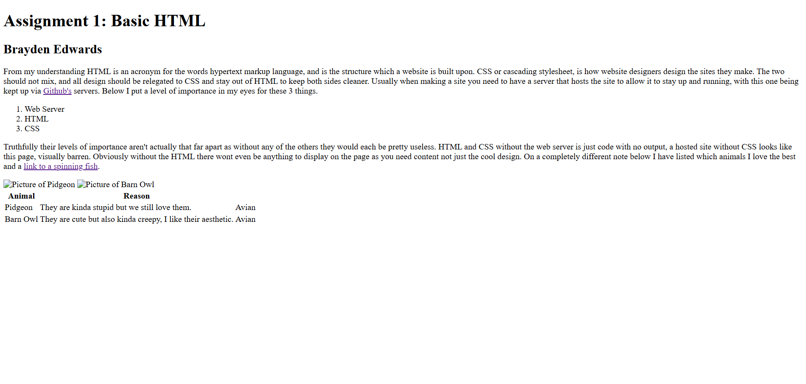
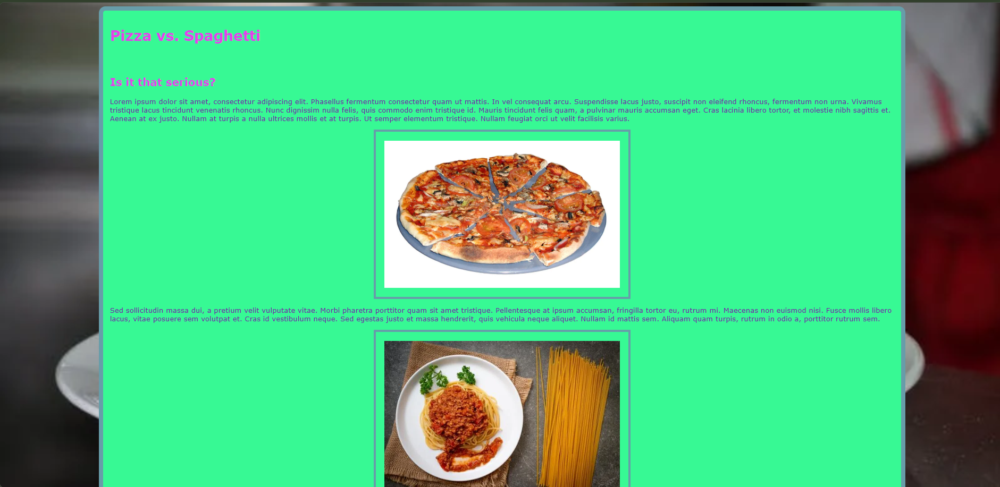
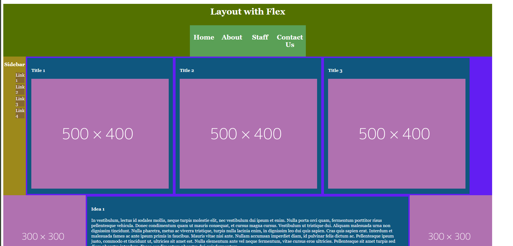
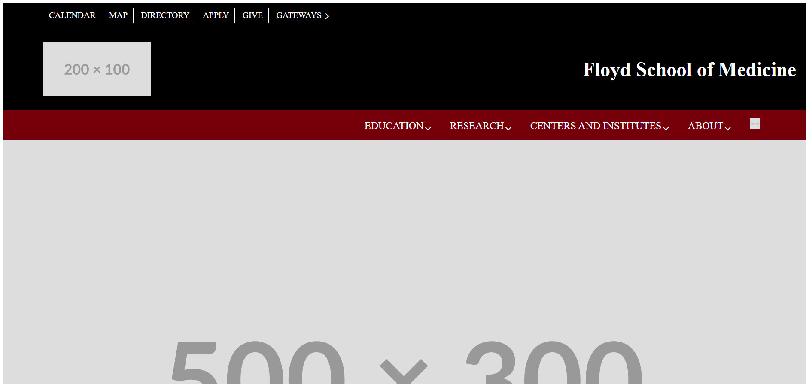

Assignment 1: Basic HTML
A demonstration of the foundational content put into HTML before it is stylized using CSS.
CSCE 242 is a class where students learn how to develop webistes using HTML, CSS, and industry tested design techniques.

A demonstration of the foundational content put into HTML before it is stylized using CSS.

The combination of HTML and CSS at a low level to demonstrate it's usage and the clear seperation needed between the two.

An assignment that uses flexboxes to divide the page into different sections while maintaining certain sections to not be tampered with.

A recreation of a University of South Carolina website with the removal of all actual links and images.
A written proposal draft as an idea of the website I wanted to build.
The combination of HTML and CSS at a low level to demonstrate it's usage and the clear seperation needed between the two.